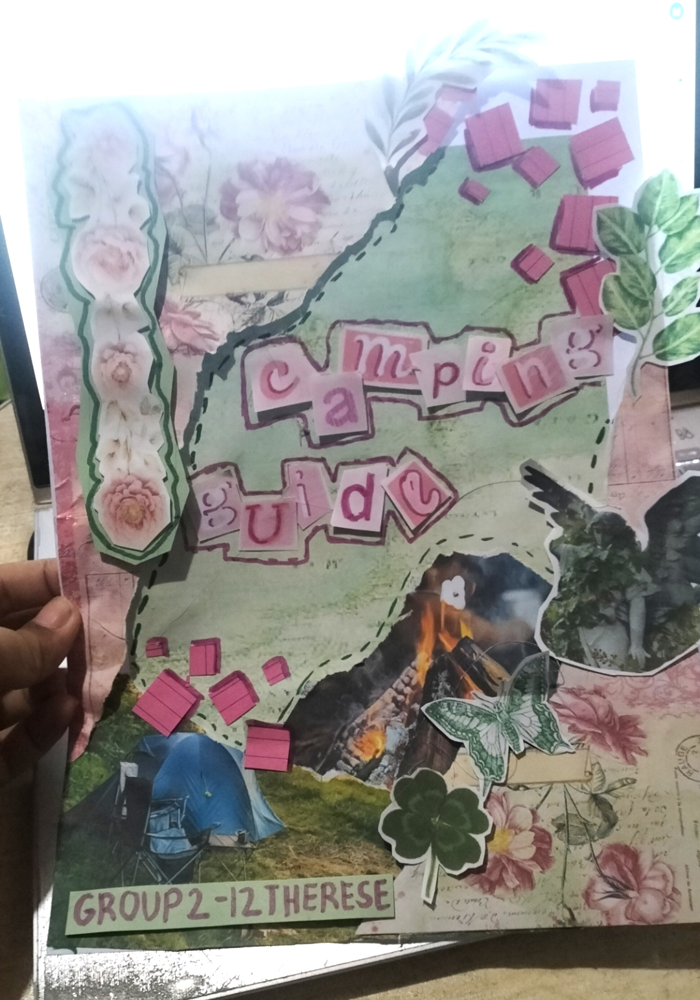

My Traditional Art
A collection of my sketches and hand-drawn artworks.
I’m more confident in traditional art, but I don’t usually color my works. :”)
And yes, I use references a LOT both in digital and traditional art.
 Aira and Pasta Two of my OCs. Young aira and pasta (persona) in the demon slayer AU. |
Colorful Eye We had an activity "this is not a circle, this is a". I was exempted from the activity because I joined a poster making contest, but I did it anyways. \(￣︶￣*\)) |
 Colorful Eye Practice Practicing doing the activity haha. |
 Tatsumaki At first was just lineart, but then I tested my new colors. I regretted it... |
 Art Scrap Collection of school drawings when I was bored. :3 |
 Art Scrap 2 Collection of school drawings part 2. |
 Himiko Toga Himiko Togo from MHA using micron pens and markers. üíõ Copied a manga panel. |
 Okkotsu Yuta Yuta from JJK. ^_^ Some proportions are kinda off... Copied an existing art of him. |
 Aira Suit Did my OC in MHA verse. ^^; |
 Aira Sketches More sketches of Aira. Unfinished. Last one looks off. |
 Ashlyn Banner Fanart of Ashlyn Banner from School Bus Graveyard!! |
 Ruriko Another OC :D Made her final design here. (∩^o^)⊃━☆ |
 JJK Choso Turned a sketch for a gift into a fully colored piece. :D Copied from an existing art. |
 Color Challenge I challenged myself to color one of my drawings. ¯\_(ツ)_/¯ |
|
Drawing Collection Cut up more of my school drawings and stuck them to a cork board in my room! |
 Frieren We weren't doing anything in ICT class, so got bored. |
 BrawlStars Edgar I used to be obsessed with Edgar during my brawl stars era lol. |
 Demon King Tanjiro Drew this without a reference?!üò± Still kinda bad though. |
 Omori Friends Headspace gang from omori! |
 Omori Friends 2 Real world gang if Mari was there :( didn't finish... |
 Yugi Amane Fanart of Hanako/Yugi from TBHK! Copied from manga panel, and didn't finish. üòî |
 Jamüí• OC fanart for my online BFF Jam! With Aira in the back. |
 KNY Comic Did a little OC x Canon comic in KNY verse. |
 Pasta KNY Pasta in KNY verse again. Manga and colored. Butchered the coloring and the manga eyes are too far apart... |
 Rui Fanart of Rui from KNY! I love him! |
 Astarion Drew Astarion from Baldur's Gate for a friend! Then my other friend rendered it. |
!School Art Activities/Projects!
A few of some drawings I did that were for school!
|
 Camping Guide Cover Cover for a camping guide booklet. It's not really a drawing though, it's more of a scrapbook type. |
Digital Divide Editorial style for a piece about Digital Divide. |
|
Kenma Coffee Painting Painted Kenma from Haikyu for our CPAR activity! |
Art We had to write a type of essay for any topic then make an illustration about it. I chose the topic of various art forms! |
|
SDG 12 Me and my two friends were tasked to make a banner for our grade for our school's SDG parade! |
Starry Night Style We had an event our grade hosted where different schools were coming, Me and my friends (again, art kids lol) were tasked to make any piece to fit the venue's theme! This was done on a 1 whole illustration board. |
 Life Cycle of a Star I made the visuals for our reporting. Super proud of it! My groupmates butchered the reporting though... |
 Structural and Value Sketch Was a quiz for our freehand and digital drawing class! |
 Black/White and Contour Sketch Also a quiz for our freehand subject. |
 Two Circles Another freehand quiz. Had to draw anything from two circles, as well as the process and structural sketch. |